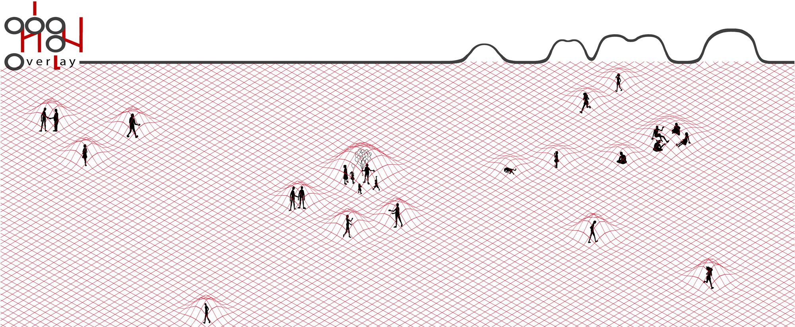

<div class="row">


	<div class="fr-work-text col-xs-12 col-md-4 col-md-push-8">
		<h3>{{page.title}}</h3>
		<h5>{{page.year}}</h5>
		<h6>{{page.tags}}</h6>
		  
		<p>
			Hom (overlay, urban blanket) is a conceptual architectural design for public space. It is our attempted to answer a question of how people interact with architecture in the age of mobile technology. Hom envisioned an interactive space where it expands or contracts its form, depends on human behaviour and needs at that specific times. It involved a portable tensile fabric structure that loosely define the needs and allows customization and transformation when the user what to shared or be isolated. 
		</p>
		<p>
			Featured in Venice Biennale Architecture 2010 as part of Thailandia Pavilion and Association of Siamese Architect Expo 2010.
		</p>

	</div>


	<div class="fr-work-img col-xs-12 col-md-8 col-md-pull-4">  

		
		
		
		
		
		
		
		<!--  -->
		<div class="flex-video vimeo widescreen">
			<iframe src="//player.vimeo.com/video/75195036" width="500" height="281" frameborder="0" webkitallowfullscreen mozallowfullscreen allowfullscreen></iframe> 
		</div>

	</div>


</div>
{% include worktile.html %}